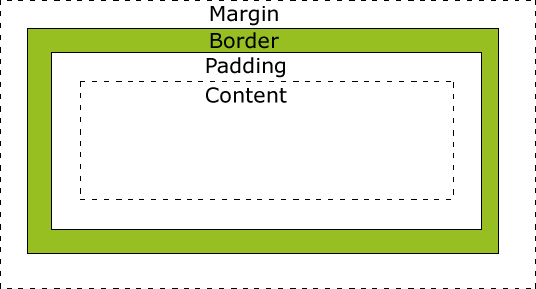

Neste pequeno texto vou falar de um dos conceitos mais importantes sobre o CSS, o Box-Model (ou Modelo de Caixa). Os espaçamentos, margens e outras ideias que fazem parte do Box-Model em CSS.
já sabemos um pouco sobre o box-model. Agora vamos entrar em detalhe sobre cada um desses elementos, de cada caixa/box, e saber do que elas são compostas e como funcionam.
Abaixo, temos uma imagem que ilustra o modelo de caixa (Box-Model):

Fonte: w3schools
Preparei um exemplo real sobre um modelo de caixa que foi aplicado em uma div, onde lhe atribuí a classe "box-model".
Ela contém uma borda de 5 pixeis, uma margem de 100 pixeis para os seus quatro cantos, padding de 30 pixeis para o topo e baixo e 60 pixeis para a esquerda e direita, o tipo do display da div foi definido como block.
Vejamos o resultado:
O código css pode ser encontrado no arquivo tarefa.css na pasta dos arquivos de estilo.